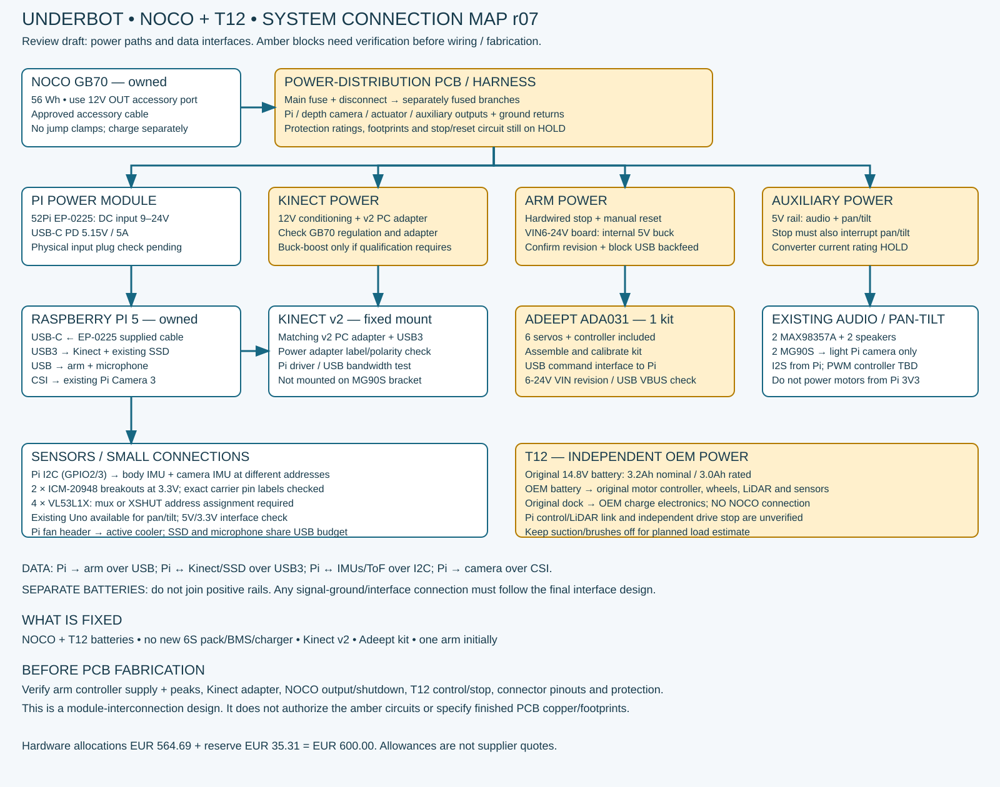

NEW: separate power PCB placement r08 ? auxiliary branch now shares arm stop power; see its circuit.
Approved battery architecture. Amber = engineering hold. One Adeept arm first; Kinect v2 retained. Not for PCB fabrication.
Excel parts list · KiCad schematic PDF · Design notes / open checks

Prices include estimates. Open workbook cell comments for selection status and sources.
| Category | Component | Qty | Unit EUR | Subtotal EUR | Already have? | Phase 1 2027 | Volt | MaxCurrent | MaxPower | Need? |
|---|---|---|---|---|---|---|---|---|---|---|
| Compute | Raspberry Pi 5 8 GB | 1 | 250 | 250 | X | 0 | 5 V | 5 A supply provision | 25 W supply budget | Yes — owned |
| Arms | Adeept ADA031 5-DOF arm kit — assemble/calibrate | 1 | 69.99 | 69.99 | 69.99 | VIN6-24V documented; verify delivered board | Stall/peak not verified | 4 W average assumption, NOT rating | One kit first | |
| Arms | Second Adeept ADA031 kit — optional | 1 | 69.99 | 69.99 | 0 | TBD | TBD | TBD | Later | |
| Compute | Raspberry Pi AI HAT+ Hailo-8, 26 TOPS | 1 | 112 | 112 | 0 | Via Pi HAT interface | N/S | N/S; not assumed 2 W | Optional — later | |
| Structure | Simple mounting deck, arm stiffener and fasteners; reuse materials | 1 | 20 | 20 | 20 | — | — | — | Yes — allowance | |
| Drive | Extra 12 V encoder gearmotors — removed | 0 | 15 | 0 | 0 | 12 V (old proposal) | Not selected | Not selected | No initially | |
| Drive | Cytron MDD10A — removed pending base interface tests | 0 | 27.5 | 0.0 | 0 | Not connected | Not selected | Not selected | Only if OEM control replaced | |
| Drive | Used Xiaomi Robot Vacuum T12, with working battery + charger/dock | 1 | 50 | 50 | 50 | 14.8 V battery; 20 V charging input | Peak N/S | 45 W nameplate | Yes — used-price target | |
| Power | New 6S battery + BMS — removed from initial build | 1 | TBD | TBD | 0 | Not used | — | — | No — use owned NOCO | |
| Power | DC-rated disconnect, main/branch fuses, hardwired actuator stop/reset hardware | 1 | 60 | 60 | 60 | ≥30 V DC rated on 6S side | Coordinate with pack, wires and faults | Not a load rating | Essential — DESIGN/QUOTE HOLD | |
| Wiring | Rated power harness, XT60/XT30, ferrules, USB data cable, strain relief | 1 | 20 | 20 | 20 | ≥30 V insulation on battery side | Per branch; size after length/current check | — | Yes — allowance | |
| Vision | Pi Camera Module 3 Wide / existing equivalent | 1 | 35 | 35 | X | 0 | Via CSI connector | N/S | Included in Pi branch budget | Yes — owned |
| Power | 52Pi EP-0225 Pi 5 USB-C PD supply module | 1 | 35 | 35 | 35 | 9–24 V DC in; 5.15 V PD out | 5 A PD output | 25.75 W PD output capacity | Selected — harness check | |
| Power | Adeept VIN harness + USB VBUS-blocking interface | 1 | 20 | 20 | 20 | VIN 6-24 V documented; internal 5 V rail | Peak and onboard converter limits to test | TBD | Essential — revision/backfeed check | |
| Power | Separate 5 V auxiliary regulator for audio + MG90S | 1 | 15 | 15 | 15 | 5 V target | Size from measured servo stall + audio load | TBD | Yes — selection HOLD | |
| Solar | Roof panel + matched 6S solar charger | 1 | TBD | TBD | 0 | Panel dependent → 25.2 V CC/CV | TBD | Panel-rated W; not battery load | Optional — later | |
| Sensors | Pololu VL53L1X carrier #3415 | 4 | 20 | 80 | 80 | 3.3 V chosen; carrier 2.6–5.5 V | 40 mA peak sensor (not board guarantee) | ~0.132 W sensor at 3.3 V | Planned — four sensors | |
| Compute | 256 GB USB 3 SSD | 1 | 25 | 25 | X | 0 | 5 V USB | Check exact SSD/enclosure label | N/S | Yes — owned |
| Power | New 6S charger — removed | 1 | TBD | TBD | 0 | Not used | — | — | No | |
| Audio | USB two-microphone array | 1 | 20 | 20 | 20 | 5 V USB | Exact model N/S | N/S | Planned — model selection | |
| Vision | Existing pan/tilt bracket + 2 MG90S servos | 1 | 15 | 15 | X | 0 | 5 V selected for later servo rail | Stall current needs exact servo test | TBD | Owned — interface validation |
| Audio | 2 MAX98357A boards + 2 existing 3 W speakers | 1 | 12 | 12 | X | 0 | 5 V chosen; IC range 2.5–5.5 V | Board/load dependent | 6 W speaker total ≠ DC input | Owned — interface validation |
| Control | Arduino Uno | 1 | 12 | 12 | X | 0 | 5 V USB / logic | Board max N/S | N/S | Owned — reuse if needed |
| Control | Adafruit ICM-20948 #4554 — body + camera IMUs | 2 | 14.9 | 29.8 | 29.8 | 3.3 V VIN chosen; breakout supports 3–5 V | Breakout max N/S | N/S | Yes — stock/substitute check | |
| Sensors | TCA9548A I2C multiplexer | 1 | 5 | 5 | 5 | 3.3 V chosen | Board-dependent | N/S | Conditional — ToF addressing | |
| Sensors | INA226 current monitor + suitable shunt | 1 | 8 | 8 | 0 | 3.3 V logic; monitored bus ≤36 V | Shunt/PCB rating, not IC rating | Shunt loss I²R | Optional — later | |
| Compute | Official Raspberry Pi 5 Active Cooler | 1 | 5.9 | 5.9 | 5.9 | 5 V fan header | Check supplied fan label | Included in Pi power provision | Yes | |
| Vision | Used Xbox One Kinect v2 sensor — confirmed version | 1 | 10 | 10 | 10 | 12 V through matching adapter; verify label | Exact sensor/adapter label needed | N/S | Yes — used price target | |
| Vision | Kinect v2 PC adapter + matching PSU + USB 3 cable | 1 | 40 | 40 | 40 | 12 V sensor-side; PSU label governs | Provision 3 A rail pending label | 36 W supply allowance, not sensor rating | Required — match exact v2 adapter | |
| Wiring | Pi 5 22-pin to camera 15-pin CSI cable | 1 | 4 | 4 | 4 | CSI only | — | — | Yes if not already owned | |
| Power | NOCO GB70 — already owned | 1 | 0 | 0 | X | 0 | 12 V accessory output | 15 A published output limit | 56 Wh stored energy | Use existing |
| Power | NOCO approved accessory cable + fused mating harness | 1 | 15 | 15 | 15 | 12 V nominal | Matched to fuse/wire rating | — | Verify owned accessories first | |
| Power | Kinect 12 V regulation / conditioning contingency | 1 | 35 | 35 | 35 | 12 V regulated target | Match adapter label + peaks | TBD | Conditional — output test | |
| Power | Distribution PCB prototype fabrication + terminals allowance | 1 | 30 | 30 | 30 | 12 V architecture | Copper/fuses TBD | — | Later fabrication — HOLD | |
| Power | Delivery and contingency reserve | 1 | 35.31 | 35.31 | 35.31 | — | — | — | Reserve |